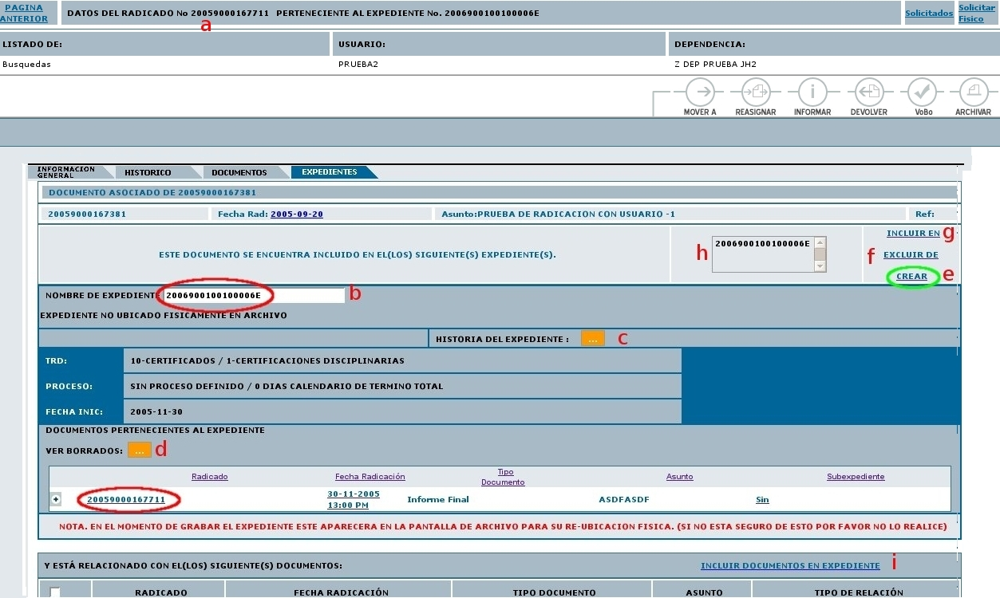
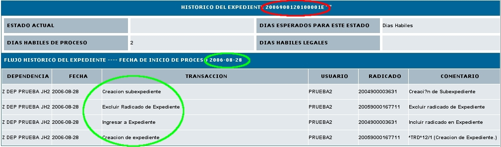
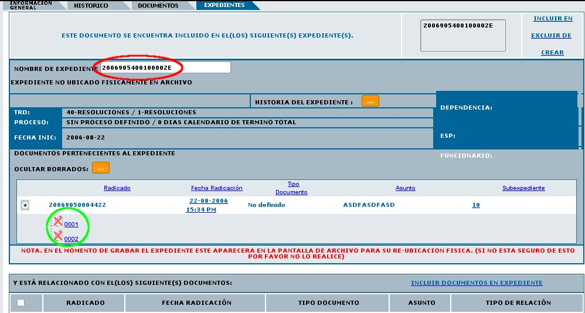

Historial
del Expediente y Ver Borrados
Esta funcionalidad permite al usuario ver el historial de un expediente y con otro boton ver los documentos anexos borrados del expediente por radicado.
Para la ver el historial o ver los radicados borrados de los expedientes virtuales se debe:
1. Seleccionar la carpeta donde se encuentra el radicado que ya posee un Expediente el cual se quiere incluir en un nuevo expediente:
2. Ingresar al radicado por la fecha de radicación:

3. Dar click en la pestaña Expedientes:

4. El sistema se ubica en la vista de "Expedientes" la cual está compuesta por:

a. Datos Radicado: Indica el numero de radicado con el que se va a trabajar.
b. Nombre de Expediente: Muestra el numero del expediente donde se encuentra actualmente el radicado.
c. Historia del Expediente: Muestra todas las operaciones realizadas al expediente donde se encuentra el radicado.
d. Ver Borrados: Muestra los documentos anexos que han sido borrados del expediente por radicado.
e. Enlace Crear: Nos permite crear un nuevo expediente para el mismo radicado. (Se debe tener en cuenta que para qué este enlace aparezca se debe poseer permiso de creación de expedientes.)
f. Enlace Excluir de: Nos permite excluir un radicado de un expediente determinado.
g.
Enlace Incluir
en: Nos permite incluir este radicado en un expediente
distinto
h. Al dar
clic sobre
cualquiera de los numeros de expedientes este actualiza la pagina con
la informacion de los radicados que se encuentran en el numero
seleccionado (La cual aparece abajo de ver borrados).
i. Enlace “INCLUIR DOCUMENTOS EN EXPEDIENTE”muestra la pantalla de permite anexar los documentos necesarios en el mismo expediente donde se encuentra el radicado.
5. Ver el historial de un expediente:
Al dar clic en el boton de "
HISTORIAL DEL EXPEDIENTE", este muestra la siguinete pantalla:

En el cual se pueden ver todas las operaciones realizadas dentro del
expediente, asi como en que estado se encuentra actualmente, los dias
experados para este trabajo, los dias habiles del proceso, lo dias
habiles legales y la fecha de inicio del proceso.
6. Ver
Borrados de un expediente:
Al dar
clic en el link "VER BORRADOS", este nos muestra una actualizacion de
la pagina con los documentos anexos borrados del expediente por
radicado.
